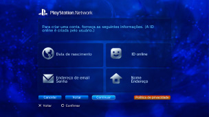

PlayStation™Network > Inscrever-se
Inscrever-se
Para utilizar esta função, poderá ter de actualizar o software de sistema.
PSNSM é o serviço online fazer compras online indo a  (PlayStation®Store), juntar-se à conversação em
(PlayStation®Store), juntar-se à conversação em  (Amigos) ou utilizar vários serviços online da PSNSM. Para utilizar a PSNSM, precisa de ter uma conta Sony Entertainment Network. Para criar uma conta, seleccione
(Amigos) ou utilizar vários serviços online da PSNSM. Para utilizar a PSNSM, precisa de ter uma conta Sony Entertainment Network. Para criar uma conta, seleccione  (Inscrever-se) em
(Inscrever-se) em  (PlayStation™Network) e, em seguida, siga as instruções no ecrã.
(PlayStation™Network) e, em seguida, siga as instruções no ecrã.

Principais itens necessários para criar uma conta
| Informação pessoal | Introduza informações do utilizador registado, que incluem data de nascimento e o nome e endereço do utilizador. |
|---|---|
| Conta mestra / subconta | Há dois tipos de contas: contas mestras e subcontas. Os titulares de contas mestras podem definir determinadas condições de utilização para subcontas associadas. Conta mestra: A conta padrão pode ser criada por um utilizador registado de idade igual ou superior ao especificado. Os titulares de contas mestras podem definir determinadas condições de utilização para subcontas associadas. Subconta: Utilizadores que não cumpram os requisitos de elegibilidade para uma conta mestra na sua região só podem utilizar uma subconta. Os titulares de uma subconta não podem criar carteiras, mas podem utilizar a carteira associada à conta mestra para pagar produtos e serviços. Não é possível criar uma subconta se não existir uma conta mestra associada. Os requisitos de elegibilidade para contas mestras e subcontas variam consoante o país ou região de residência. Para mais informações, visite o Web site da SIE da sua região. |
| ID de início de sessão (endereço de correio electrónico) | Registe uma ID para usar quando iniciar a sessão na PSNSM. Utilize um endereço de correio electrónico válido que possa ser utilizado para receber mensagens de confirmação em situações como compras em (PlayStation®Store). |
| Palavra-passe |
Crie uma palavra-passe de acordo com o seguinte:
|
| ID Online |
Registe um nome que será apresentado publicamente na PSNSM. Depois de criar a sua ID Online não é possível alterá-la. Crie uma ID Online de acordo com as seguintes indicações:
|
Notas
- Para criar uma subconta, visite o seguinte website:
https://www.playstation.com/acct/family - Dependendo da idade do menor, é necessário um PC para criar a subconta. Durante o processo de criação da conta, é enviada uma para o endereço de correio electrónico associado à ID de início de sessão do titular da conta mestra. Siga as instruções no na mensagem electrónica para completar o registo num PC.
- Para iniciar a sessão na PSNSM com a subconta criada, é necessário associar a conta a um Utilizador que irá iniciar sessão no sistema PS3™. Consulte [Utilizar uma conta existente] em (PlayStation™Network) neste manual.
- A sua ID de início de sessão (endereço de correio electrónico) e a palavra-passe não serão apresentadas publicamente. Tenha cuidado para não partilhar esta informação com outras pessoas.
- Só pode criar uma conta por cada Utilizador no sistema PS3™. Para criar contas adicionais, vá a
 (Utilizadores) e crie utilizadores adicionais.
(Utilizadores) e crie utilizadores adicionais. - Para informações sobre o tratamento de informações pessoais relacionadas com os utilizadores, visite o Web site da SIE da sua região.
- Para aceder à PSNSM é necessário um serviço de Internet de banda larga. Tenha em atenção que a ligação comutada não é suportada.
- A PSNSM está disponível apenas em determinadas regiões e idiomas. Para obter detalhes, contacte a linha de suporte técnico da sua região.
- (Inscrever-se) é apresentado apenas se não tiver sido criada uma conta.